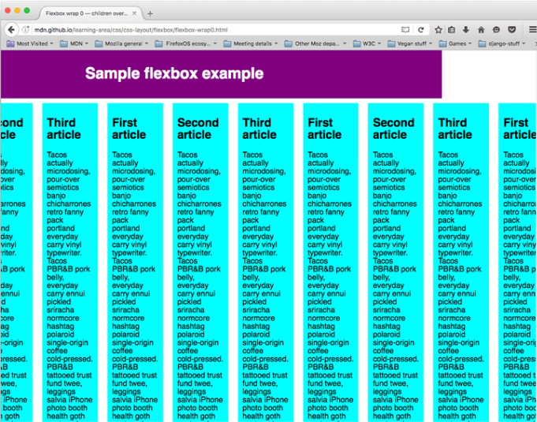
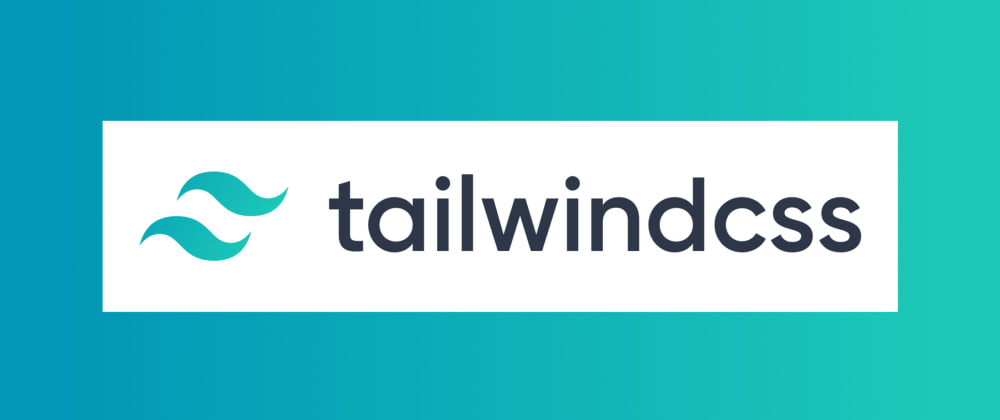
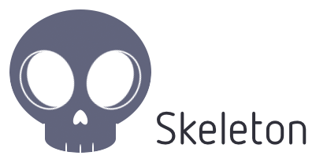

Mobile First
Puede pensar que concentrarse en la experiencia móvil primero suena inútil, ya que estamos más
acostumbrados a tratar con sitios de escritorio, y seguramente debemos considerar la gama completa de
funciones para la experiencia general en escritorio, móvil, etc., antes de emparejar se reduce a una
experiencia móvil que es más simple, más ágil o lo que sea. Esto suena cierto, sí, pero en nuestra
experiencia, el móvil primero se trata más de tener la implementación móvil como una capa predeterminada
sobre la que construir. La propuesta del Mobile First o el darle preferencia a las páginas web
desarrolladas para
una mejor accesibilidad en dispositivos moviles inicia dado que Luke Wroblewski (director de productos
de Google) publica un libro
llamado "Mobile First". En este denota que su propuesta era crear un sitio web pensado para dispositivos
móviles primero y después ajustarlo para
la computadora, es decir, introducia un concepto de responsividad con un proceso opuesto al que llevamos
a cabo cuando desarrollamos webs para computadoras.
así mismo se considera al Mobile First como una filosofía que perfecciona el proceso de diseño de
cualquier sitio web, buscando mejorar el diseño web adaptable.
Una de las principales ventajas que tiene el mobile first es que un sitio web diseñado específicamente
para dispositivos moviles se adapta con mucha mayor facilidad
a la computadora.
Restricciones móviles
Ya hemos mencionado el hecho de que los móviles generalmente tienen menos memoria, potencia de
procesamiento y ancho de banda que otros dispositivos (aunque tenga en cuenta que los televisores
inteligentes también suelen tener una potencia bastante baja). También tienen menos tamaño de ventana de
visualización disponible. Por lo tanto, además de dividir el contenido en diferentes vistas y
simplificar la interfaz y el contenido en cada vista de su aplicación para dispositivos móviles tanto
como sea posible, también es una buena idea no incluir efectos visuales como sombras, animaciones y
degradados. Al menos debe considerarlo como una opción, especialmente si experimenta un rendimiento
lento o lento cuando su aplicación se ejecuta en un dispositivo móvil.
MODULO FLEXBOX PADRE
Flexbox es un método de diseño de página unidimensional para compaginar elementos en filas o columnas.
Los elementos de contenido se ensanchan para rellenar el espacio adicional y se encogen para caber en
espacios más pequeños.
El diseño CSS Flexbox es un módulo de CSS que define un modelo de caja, optimizado para el diseño de
interfaces de usuario. En el diseño flex, los nodos hijo se pueden distribuir en dirección vertical u
horizontal y se pueden "flexibilizar" sus tamaños, bien sea rellenando el espacio disponible o
encogiéndose para evitar salirse del contorno del nodo padre. Se puede manipular fácilmente tanto la
alineación horizontal como la vertical, de los nodos hijo. La anidación de estas cajas (horizontal
dentro de vertical o vertical dentro de horizontal) se puede usar para construir diseños en dos
dimensiones.
Propiedades de alineación
Las propiedades align-content, align-self, align-items y justify-content aparecieron inicialmente en la
especificación de Flexbox, pero ahora están definidas en Alineación de cuadro y la especificación de
Flexbox las refiere a la Especificación de alineación de cuadro para definiciones actualizadas.

Especificar qué elementos colocar como cajas flexibles
Para comenzar, vamos a seleccionar qué elementos se van a presentar como cajas flexibles. Para ello,
establecemos un valor especial de displayen el elemento padre de los elementos que desea editar. En este
caso, queremos compaginar los elementos <article>, por lo que lo establecemos en <section>(que se
convierte en un contenedor flexible)
MODULO FLEXBOX HIJOS
Cuando los elementos se presentan como cajas flexibles, se distribuyen con respecto a dos ejes:
El eje principal ( eje principal ) es el eje que corre en la dirección en que se colocan los elementos
flexibles (por ejemplo, según se dispone de las filas en una página o hacia abajo según se dispone de
las columnas en una página). El inicio y el final de este eje se denominan inicio principal ( inicio
principal ) y final principal ( final principal ).
El eje transversal ( eje transversal ) Es El eje Que corre perpendicular a la Dirección en La que se
colocan Los Elementos flexibles. El inicio y el final de of this eje se denominan inicio transversal (
cross inicio ) y Extremo cruzado ( extremo cruz ).
El elemento padre que tiene establecido display: flex(el elemento <section>en nuestro ejemplo) se
llama
contenedor flexible .
Los elementos que se presentan como cajas flexibles dentro del contenedor flexible se denominan
elementos flexibles
VARIABLES CSS
En CSS, las propiedades personalizadas (también conocidas como variables) son entidades que contienen
valores específicos que se pueden volver a utilizar en un documento.
Los sitios web complejos tienen cantidades muy grandes de CSS, a menudo con una gran cantidad de valores
repetidos. Por ejemplo, el mismo color se puede utilizar en cientos de lugares diferentes, lo cual
requiere buscar y reemplazar globalmente si necesitamos cambiar ese color.
Las variables CSS permiten que un valor se almacene en un lugar y luego se haga referencia en varios
otros lugares. Se declaran con la siguiente sintaxis:
< lapso de estilo=" color: # BA335F; "> --nombre : valor;
Y se invocan
mediante la función
< Lapso de estilo=" color: # BA335F; "> var () , por example:
Propiedad: <
lapso de estilo=" color: # BA335F; "> var () (--nombre);
Para declarar propiedades personalizadas (variables) se debe usar un nombre que comience con dos guiones
(-), y un valor que puede ser cualquier valor válido de CSS.
Como any otra propiedad, se
escribe
Dentro de las reglas CSS, por example:
Elemento { < lapso de estilo=" color: # BA335F; ">
--main-color: rojo;}
Los nombres de las variables de CSS distinguen Entre mayúsculas Minúsculas Y, por EJEMPLO: < br>
< br>
--Mi color
--Mi color
Son las variables Distintas.
FRAMEWORKS
Tailwind
TailwindCSS es un frameworkCSS de Utility-Firstpara crear rápida y fácilmente
interfaces de usuario personalizadas sin olvidar cuales son los elementos en CSS. Es un frameworkCSS de
bajo nivel altamente personalizable.
Tailwind no impone especificaciones de diseño, sino que reúne
pequeños componentes para construir una interfaz de usuario única. Toma un archivo CSS "sin procesar",
procesa este archivo CSS sobre un archivo de configuración y generar una salida.

UIKIT
Un kit de interfaz de usuario es un conjunto de archivos que contiene componentes de la interfaz de
usuario como fuentes, iconos, documentación y archivos HTML / CSS. Pueden ser bastante simples con
algunos botones y componentes de diseño, o extremadamente robustos con conmutadores que cambian las
fuentes, los colores y las formas sobre la marcha.
Se utilizan comúnmente para el diseño de dispositivos móviles o la creación de prototipos, en gran parte
porque dos de los sistemas operativos más importantes, iOS y Android, tienen sistemas de diseño
robustos, bien documentados y con un gran soporte.

SKELETON
Skeleton fue construido usando Sublime Text 3 y diseñado con Sketch.Skeleton fue creado por Dave Gamache
para una mejor web.Dave es un diseñador e ingeniero con más de una década trabajando con nuevas empresas
como Twitter, Netflix, Medium y Dropbox. Dirige Producto y Diseño en WelcomeLend, además de ser
copropietario de Bootstrap, uno de los proyectos de código abierto más populares del mundo

Material design lite
Material Design Lite le permite agregar una apariencia de Material Design a sus sitios web. No se basa
en ningún marco de JavaScript y tiene como objetivo optimizar para el uso en varios dispositivos,
degradar con garacia en los navegadores más antiguos y ofrecer una experiencia a la que se puede acceder
de inmediato.
Google buscaba la unificación del diseño tanto en los entornos de escritorio como web.Material
Design Lite es una biblioteca de componentes, basada en la guía de estilo de material design.
Los componentes MDL se crean con CSS, JavaScript y HTML. Puede utilizar los componentes para
construir páginas web y aplicaciones web que sean atractivas, coherentes y funcionales. Las páginas
desarrolladas con MDL se adherirán a los principios de diseño web moderno, como la portabilidad del
navegador, la independencia del dispositivo y la de gradación elegante.

milligram
Milligram es un simple y ligero CSS framework para hacer sitios web. Es ideal para los
desarrolladores ¨front end¨que necesitan un diseño ¨agnostic framework¨. Milligram
provee de una configuración mínima de estilos para un rápido y limpio punto de inicio.
Especialmente diseñado para un mejor rendimiento y mayor productividad con menos
propiedades para resetear, resultando en código más limpio; Milligram es una herramienta
de código abierto.
Milligram tiene 8.21K estrellas en GitHub y 482 GitHub forks. Nos incluye tipografía,
botones, listas, formularios, grids, tablas y otros elementos básicos. También, hace uso de
CSS Flexible Box Layout Module standard (Flexbox) e incluye archivos Sass.